Bestiari
"La Edad Media atribuyó al Espíritu Santo la composición de dos libros. El primero era, según se sabe, la Biblia; el segundo, el universo, cuyas criaturas encerraban enseñanzas inmorales. Para explicar esto último, se compilaron los Fisiólogos o Bestiarios..." (Jorge Luis Borges)Reedició i traducció d'una part dels Bestiaris originals publicats a la xarxa per l'autora l'any 2001.Il·lustracions d'Anna Ribot, textos d'Anna Ribot i Xavier Folgarona
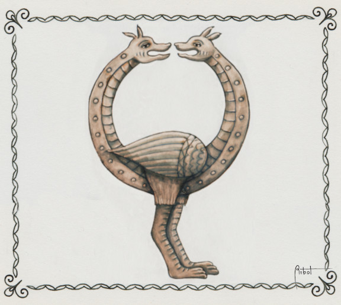
Amfisbena
És un animal, normalment un rèptil, amb dos caps, l’un al seu lloc I l’altre a la cua, cosa que el permet caminar en ambdues direccions, I també cargolar-se en forma de cèrcol i rodolar per terra. Els seus ulls són brillants com brases i és molt verinosa, tot i que la seva pell es fa servir com a protecció contra les picades d’altres rèptils.
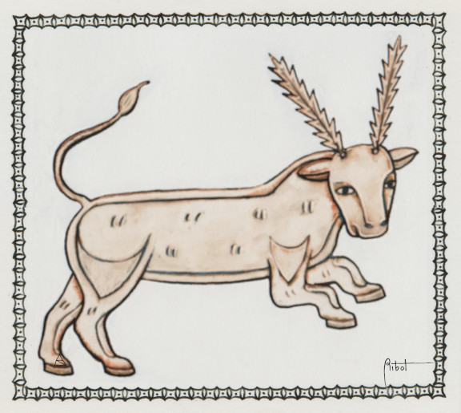
Aptalops
També anomenat antolops, antula i altres. El seu cos és de brau, i les banyes, que tenen forma de serra, tendeixen a enredar-se en els arbustos de ricí que creixen a la vora de l'Eufrates quan va a beure. Així pot ser caçat. Diuen que la seva carn, cuinada en vi, dona intel·ligència als nens.
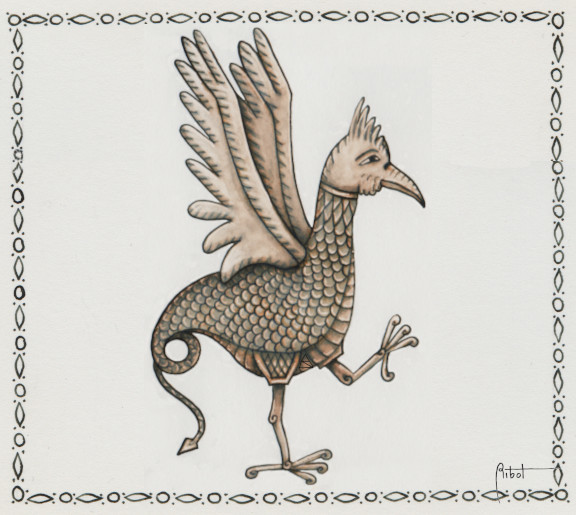
Basilisc
Neix de l'ou d'un gall vell, fecundat per una serp i incubat per un gripau. Té cos de gall, potes d'au, ales espinoses i cua de rèptil. La seva mirada mortal trenca pedres i crema les pastures, i el seu alè podreix la fruita i enverina l'aigua dels rius. Però la seva sang té grans qualitats terapèutiques. La millor defensa contra els basiliscos és un mirall.
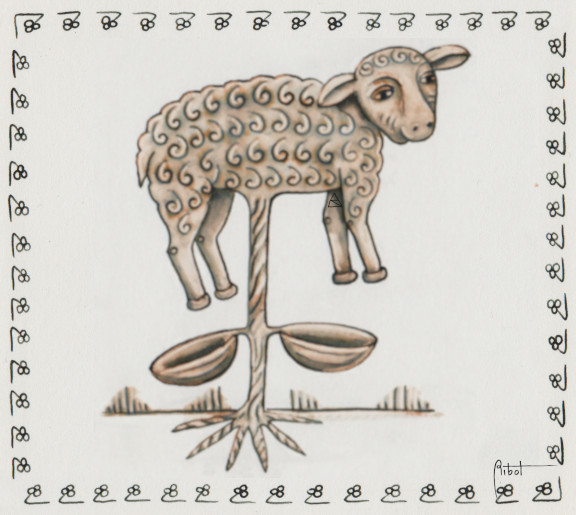
Borametz
Borametz, xai d'Escitia o be vegetal. A l'Orient creix aquesta curiosa planta, una mena de meló o carabassa, de l'interior de la qual neix un fruit en forma de xai. Aquest devora l'herba que creix al seu voltant fins on arriba i després s'asseca i mor. Amb la seva llana es confeccionen valuosos barrets. És un dels aliments preferits pels llops. Hi ha una versió anterior on els xais són fruits que pengen de les branques d'un arbre.
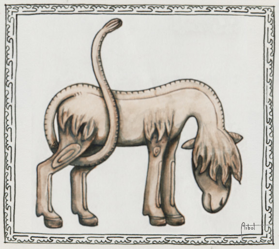
Catoblepas
Animal de mida mitjana, coll prim i cap tan pesat que amb prou feines pot aixecar-lo. Una espessa cabellera cobreix els seus ulls, i li dificulta la visió. És una sort, perquè mata amb la mirada. Menja herbes verinoses que contaminen el seu alè. Algunes versions diuen que només està despert quan hi ha lluna.
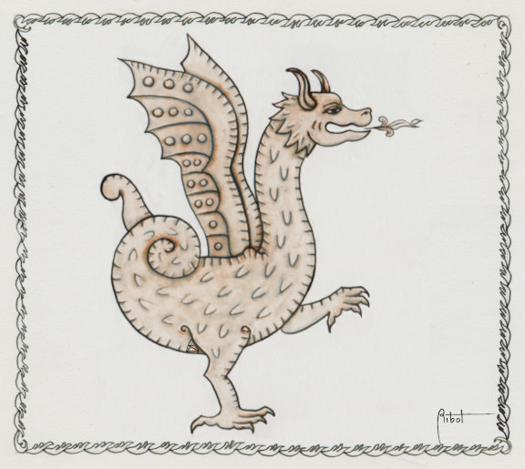
Drac
És una enorme serp alada amb potes que llença foc per la boca. Sol viure en coves custodiant tresors. A l'Occident se l’associa amb el Mal, i comparteix protagonisme amb Hèrcules, Sigurd, Sant Miquel, Sant Jordi, Beowulf, Santa Marta, Sant Felip i altres, en les seves respectives històries. Algunes parts del seu cos tenen poders extraordinaris: es fan ungüents i remeis amb els seus ulls, cor, cap, cua ... i les seves dents fan que els reis siguin més justos i indulgents.
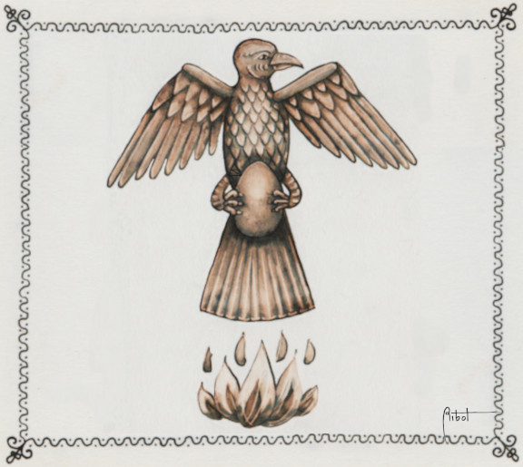
Fènix
És una au que cada cinc-cents anys repeteix el mateix cerimonial: vola des-de l'Índia carregada amb canyella i herbes aromàtiques, fins a l’Egipte, on li han preparat un altar amb sarments de vinya. L’encén i s’hi crema. A l'endemà, entre les cendres apareix un cuc, que al segon dia s'ha convertit en pollet. El tercer dia recupera el seu aspecte madur i torna a la llar. Altres versions expliquen que viu a l'Aràbia i quan mor el seu pare fabrica un ou de mirra, i dins tanca el cadàver que després transportarà a l'Egipte amb les seves urpes.
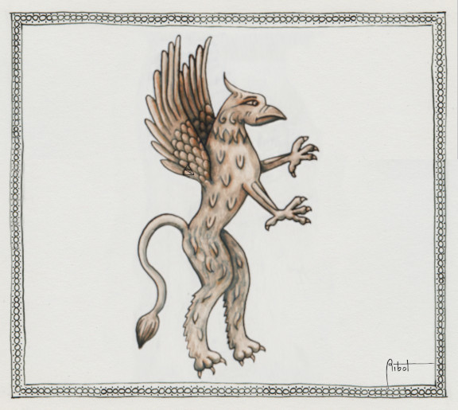
Griu
D'entre diverses possibilitats, generalment es representa al griu com un lleó amb grans ales i cap d'àliga. El seu origen sembla trobar-se a Mesopotàmia; posteriorment el grec Hesíode els situa a l’Hiperbòria lluitant contra els arimaspes i custodiant un gran tresor, sempre relacionats amb el déu Apol·lo. Una altra llegenda, aquesta d'origen medieval, el fa conductor del carro volador que va portar a Alexandre el Gran a explorar els cels. És enemic acèrrim dels cavalls i dels homes.
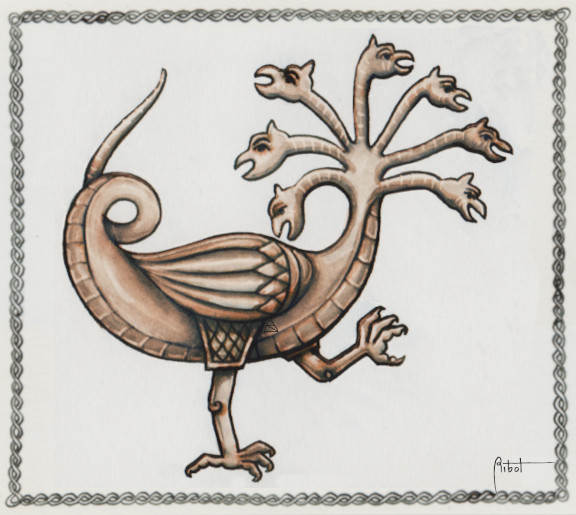
Hidra de Lerna
Als bestiaris medievals, l’Hydra té un petit paper com drac de segon ordre, però el seu origen grec la converteix en un interessant clàssic. Generalment posseïa nou caps d'alè verinós, dels quals el central era immortal. Si se li tallava un cap, tot seguit n’apareixien dos al seu lloc. Hèrcules va aconseguir vèncer-la cauteritzant amb foc els monyons que quedaven després de tallar-li cadascun d'ells perquè no brotessin de nou, i enterrant l'últim sota una pedra. La seva sang li va ser molt útil per enverinar puntes de fletxa.
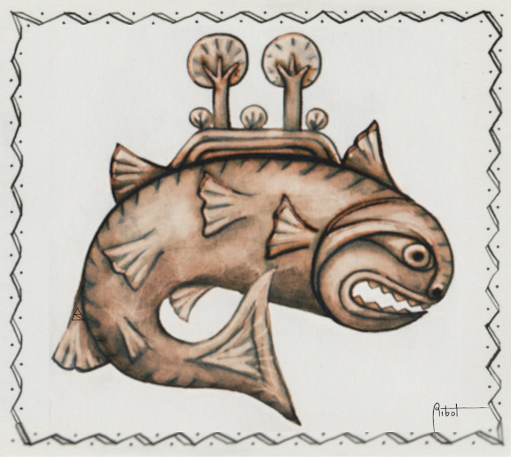
Lacòvia
Per les seves enormes dimensions era presa per una 'illa vivent', ja que a la sorra acumulada al seu llom podien créixer arbres. Els incauts mariners desembarquen i encenen foc sobre ella prenent-la per terra ferma i, en sentir la calor, la bestiola s'enfonsa als abismes arrossegant als pobres al fons. També se la pot anomenar aspidochelone. De la seva boca emana un efluvi dolç que atrau als peixets.
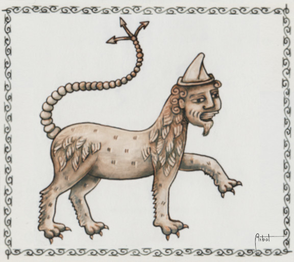
Mantícora
També coneguda com Martykhora i Mauricomorion. Es descriu com una bèstia amb cua d'escorpí i cap humà, amb diverses files de dents i enorme velocitat. Diferents fonts no es posen d'acord pel que fa a la seva veu: uns defensen que és harmoniosa i dolça i d'altres que és estrident i molesta, però coincideixen en la seva voracitat per devorar homes. Atenció a la seva cua que llença dards...
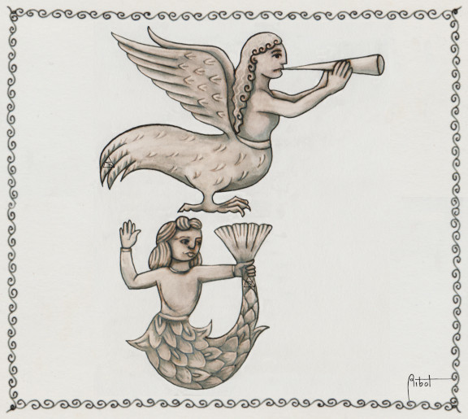
Sirena
A la seva part superior són belles dones i l'altra meitat pot ser d'au o de peix. Es pentinen, canten, i atrauen temptadores als mariners, que embogeixen i abandonen el vaixell per anar darrera seu. Ulisses va aconseguir sobreviure a la seva música lligant-se al pal de la seva nau. Orfeu les va vèncer amb el seu cant.
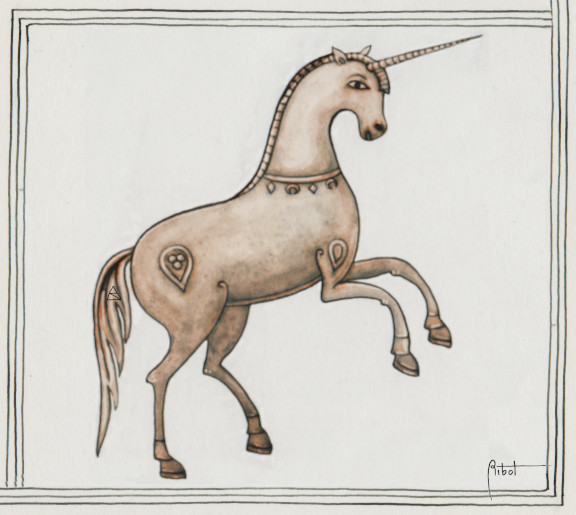
Unicorn
És blanc i veloç i posseeix una banya llarga i recta al front, molt cobejada per les seves extraordinàries propietats terapèutiques. L'unicorn se sent atret per la bellesa i l'olor de les donzelles, les úniques que poden capturar-lo. Simbolitza la puresa i venç a l'elefant, però el lleó, més llest, pot matar-lo.�
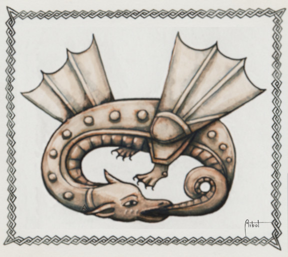
Uroboros
Segons l'Edda de Semund, Jömungard, un dels tres fills del malvat Loki i la geganta Argurboda, va ser llançat a la mar per Odin, i va créixer tant que va envoltar la terra i va acabar mossegant-se la cua, causant tempestats amb el seu moviments. Aquest monstre, ja representat pels fenicis, és segons Ricí una imatge del temps que es mou en cercle convertint el principi en fi. També és el ventre creador, l'ambivalència universal, senyal que tot allò nascut de la Providència torna a ella.